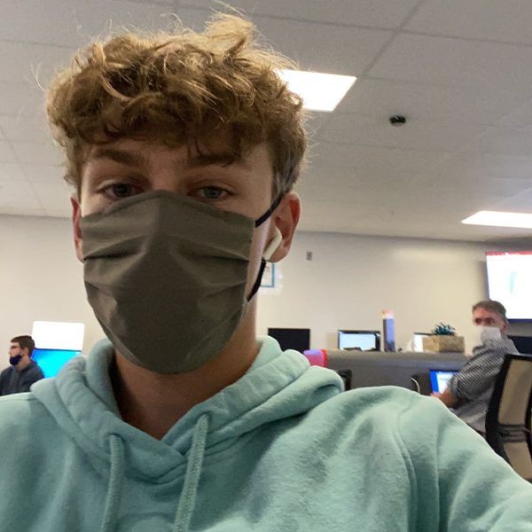

About Us

|

Ethan RectanusApplication Development 1 Student My favorite hobbies are playing Baseball and lifting. My favorite programming language is Java because it was the first object oriented language I learned. I got into coding because of the Intro to Computer Science course I took in freshman year and I decided to take the AP course my sophomore year. I enjoy coding random math and logic functions that do simple tasks. |
Mason CherryADP 1 Student Some of my favorite hobbies include talking to friends, gaming, streaming and working. My favorite programming language is css, and html mostly because I have done the most with them and I know a good amount of stuff. I came to dacc without knowing anything about coding and just decent pc knowledge. My favorite thing to code is the look of a site or page i’m working on. I really enjoy making and styling pages. |

Parker WilliamsApplication Development 1 Student My favorite hobbies are playing hockey and building computers. |
Skyler FloydApp. Dev. 1 student Some of my favorite hobbies include bowling, theater, and playing video games. |